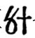

矛尘兄：
承示甚感。
五十人案[552]，今天《京报》上有名单，排列甚巧，不像谣言，且云陈任中甚主张之。日前许季黻曾面问陈任中[553]，而该陈任中一口否认，甚至于说并无其事，此真“娘东石杀”之至者也。
但此外却一无所闻，我看这事情大约已经过去了。非奉军入京，或另借事端，似乎不能再发动。至于现在之事端，则最大者盖惟飞机抛掷炸弹[554]，联军总攻击，国直议和三件，而此三件，大概皆不能归咎于五十人煽动之故也欤。
迅上 四月九日
我想调查五十人的籍贯和饭碗，有所议论，请你将所知者注入掷下，劳驾，劳驾！
其实只有四十八人，未知是遗漏，还是仿九六足串大钱[555]例，以算

也。注 释
[552] 五十人案 指三一八惨案后，段祺瑞政府秘密制定的通缉鲁迅在内的五十人名单（参看《而已集·大衍发微》）。4月9日，《京报》刊载《三一八惨案之内幕种种》，揭露制定黑名单的经过情形，并列出了四十八人的姓名。
[553] 陈任中（1875—？） 字仲骞，江西赣县人。当时任教育部参事，代理次长。据《三一八惨案之内幕种种》揭露：惨案发生后，章士钊等“特托陈任中调查反对者之姓名，开单密告”。为此陈于4月10日、16日先后在《京报》发表致编者信及刊登启事，予以否认。
[554] 飞机抛掷炸弹 1926年4月，冯玉祥的国民军和奉系军阀张作霖、李景林所部作战期间，国民军驻守北京，奉军飞机曾多次飞临轰炸。联军总攻击，1926年4月7日，奉系李景林、张宗昌组成直鲁联军，对据守北京的国民军发动总攻击。国直议和，当时直系军阀吴佩孚主张联奉讨冯，但其部分将领田维勤等则倾向联冯讨奉，因此冯曾与他们进行“国直议和”活动，但未成功。
[555] 九六足串大钱 以九十六文钱当作足串（百文）计算。旧时以制钱一百文为一串。